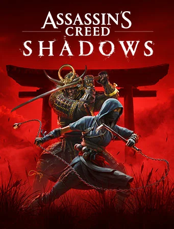

GameHub
Silent Hill 2 Remake

Silent Hill 2 Remake é uma reimaginação do clássico jogo de terror. Com gráficos impressionantes e uma narrativa envolvente, este remake traz de volta os horrores da cidade de Silent Hill com uma nova perspectiva.
Nota: ★★★★★
Sonic x Shadow Generations

Sonic x Shadow Generations combina a velocidade frenética de Sonic com a complexidade do universo de Shadow, oferecendo uma nova experiência aos fãs. A jogabilidade e a narrativa se entrelaçam de forma envolvente.
Nota: ★★★★☆
Dragon Ball Sparking!

Dragon Ball Sparking! traz uma luta épica entre personagens icônicos do anime. Com gráficos vibrantes e combates dinâmicos, é um deleite para os fãs da série.
Nota: ★★★★☆
Assassin's Creed: Shadows
Assassin's Creed: Shadows leva os jogadores a uma nova era de assassinatos furtivos. Com gráficos impressionantes e uma história rica, é uma adição emocionante à série.
Nota: ★★★★★
Star Wars Outlaws

Star Wars Outlaws coloca os jogadores no papel de um contrabandista em uma galáxia distante, oferecendo uma nova perspectiva sobre o universo de Star Wars. A jogabilidade é envolvente e repleta de ação.
Nota: ★★★★★